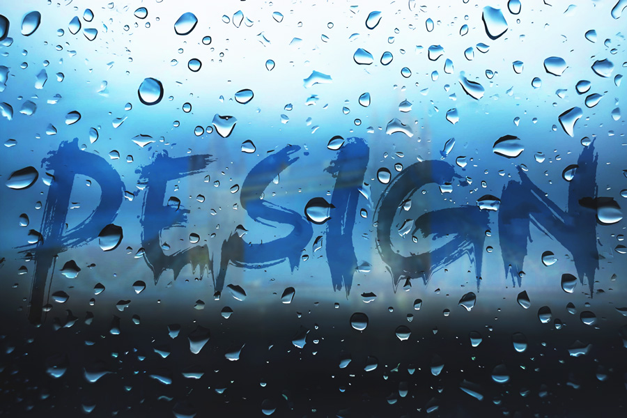

视频教程： https://youtu.be/lI6lIZh2MY4
视频中使用的素材：点击下载>> | 备用下载>>
操作步骤：
1.Ctrl+N 新建图层 → 导入素材并放大（Shift键）
2.栅格化图层 → 设置叠加混合模式
3.应用高斯模糊（适当强度）→ 调整不透明度
4.曲线调整（提升亮度/压低暗部）
5.文字创建：
使用文字工具输入
Ctrl+T 放大
选择 leviBrush 笔刷字体 → 黑色
Alt+方向键 调整行间距
6.文字特效处理：
栅格化文字
液化滤镜（塑造水流效果）
波纹滤镜（幅度60）
柔光混合模式 → 调整不透明度
7.背景处理：
复制城市图层（Ctrl+J）
内容识别填充（Shift+F5）去除部分水珠
污点修复工具清理多余水珠
8.最终优化：
调出文字选区 → 添加蒙版
盖印图层（Ctrl+Alt+Shift+E）
曲线 + 色相饱和度调整
以下是PS水雾玻璃成品效果
